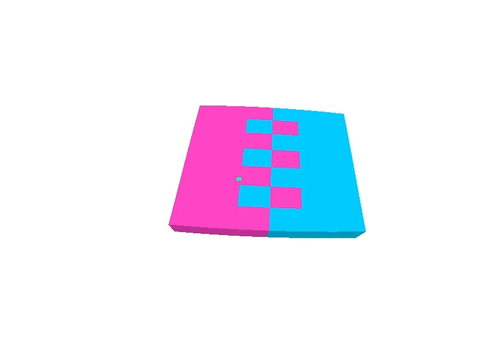
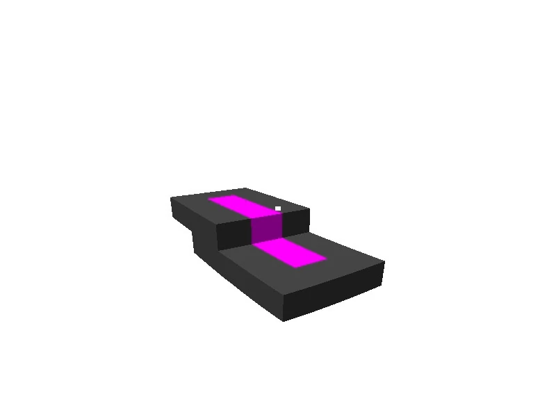
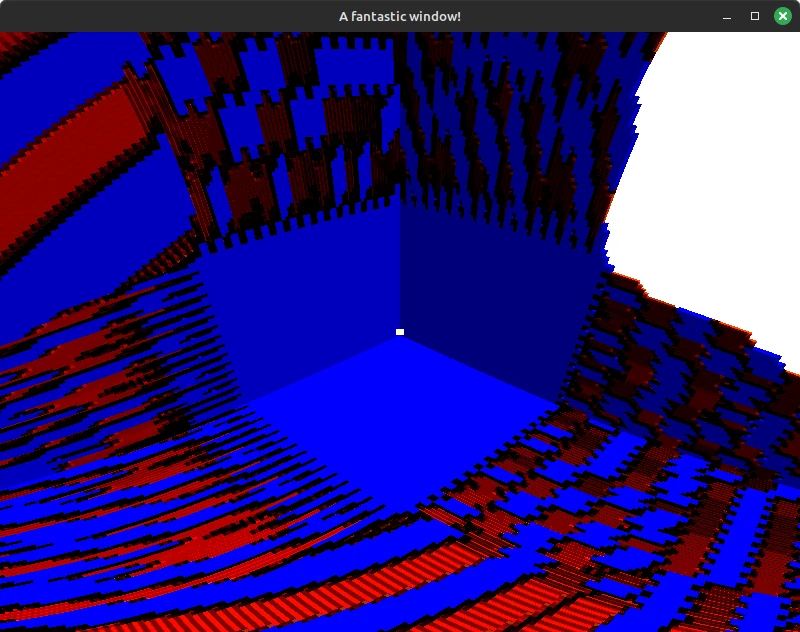
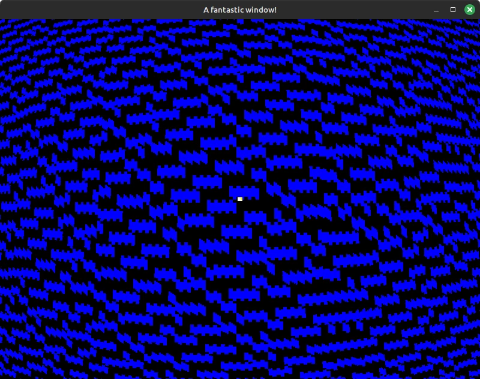
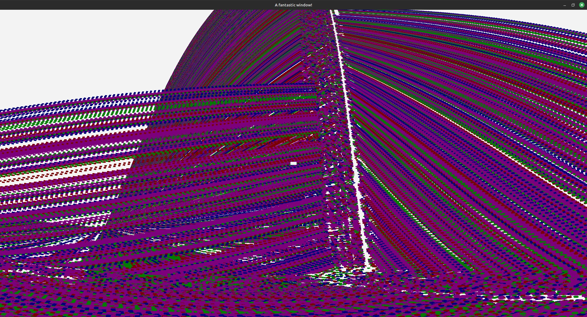

Page published
My current project! Well, at least at the time of writing this.
This project is a successor of Build Sprint.
I grew frustrated with the code I was working with and the things I was doing, so I decided to try making the game without an engine.
 Right now I'm still working on the rendering. I raytrace the voxels with the help of an octree.
During the process of making the raytracer, I've broken it a few times. Here are some pretty screenshots:
  